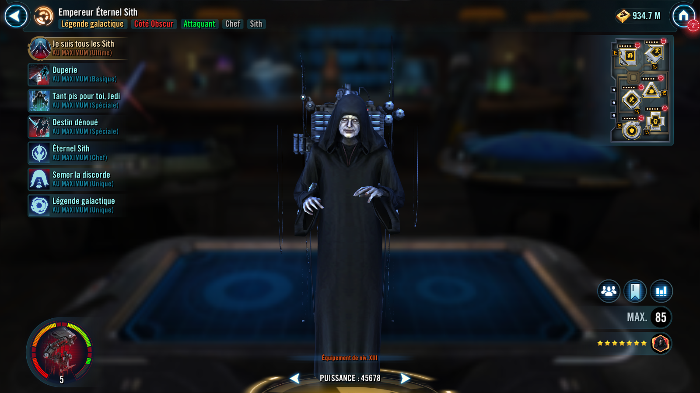

Requires 100% Ultimate Charge to activate
Ultimate Charge: Sith Eternal Emperor gains 2% Ultimate Charge whenever a Deceived enemy uses an ability. If Sith Eternal Emperor is the leader, he also gains 8% Ultimate Charge whenever a Linked enemy uses an ability.
Sith Eternal Emperor gains Mastery equal to his current Mastery until the end of battle and transforms into Sith Eternal Emperor (Restored). If he is the leader, all other Dark Side allies gain Mastery equal to their current Mastery until the end of battle. Remove Deceived from all Deceived enemies and inflict Deceived until the end of encounter on those enemies, which can't be copied, dispelled, or resisted.
When Sith Eternal Emperor transforms, he loses the abilities Deception and So Be It, Jedi and gains two new abilities.
[Basic] Revitalized Shock: Deal Special damage to target enemy and inflict Shock for 2 turns, which can't be copied or dispelled. This attack deals 150% more damage to Deceived Light Side enemies. If the target was already Deceived, reduce the cooldown of Power! Unlimited Power! by 1 for each Deceived enemy. This attack can't be evaded.
[Special] Power! Unlimited Power!: Instantly defeat Linked enemies and deal Special damage to all enemies. Then, dispel all buffs on Deceived enemies and deal Special damage to them. Enemies defeated by this ability can't be revived. This attack can't be evaded.
Deal Special damage to target enemy. If that enemy wasn't Deceived, they become Deceived for 2 turns, increased to 3 turns if they are a Jedi. Deceived can't be copied, dispelled, or resisted. Sith Eternal Emperor gains Speed Up for 2 turns. This ability can't be countered.
Deceived: Can't target Sith Eternal Emperor during their turn if another Sith enemy is active; when an ability is used, Sith Eternal Emperor gains 2% Ultimate Charge
Deal Special damage to target enemy and call all other Dark Side allies to assist, dealing 10% more damage for each Deceived enemy. Dark Side allies recover 50% Protection. Jedi enemies defeated this turn can't be revived.
Dark Side allies gain Retribution for 3 turns, and Dark Side Tank allies gain Taunt for 2 turns. Remove Linked from all enemies. Then, target enemy becomes Linked until a Linked enemy is defeated or until the end of encounter. Sith Eternal Emperor gains the granted ability Entwined Fate and takes a bonus turn.
During this bonus turn, Sith Eternal Emperor may only use Entwined Fate, can't be ability blocked, ignores taunt effects, and may not target a Linked character.
Linked: This character is Linked
Entwined Fate: Target enemy becomes Linked. This ability is removed and can't be used again until Unraveled Destiny is used.
Dark Side allies have +25% Mastery, +30% Potency, and +20 Speed, doubled for Sith allies.
Whenever a Deceived or Linked enemy uses an ability, Sith Eternal Emperor gains 10% Mastery (stacking) until the end of encounter and other Sith allies gain half that amount. Whenever a Linked enemy uses an ability, Sith Eternal Emperor gains 8% Ultimate Charge.
After the start of each encounter, whenever an enemy gains a buff that can't be dispelled, Sith allies gain 5% Turn Meter.
Whenever a Sith ally is defeated, dispel all debuffs on other Sith allies and they recover 100% Health and Protection. Sith allies can't be revived, and they ignore defense when targeting a Jedi enemy.
Sith Eternal Emperor is immune to taunt effects and Turn Meter reduction. Deceived enemies can't counter attack, and Deceived Rebel and Jedi enemies can't gain bonus Turn Meter.
At the start of Sith Eternal Emperor's turn, if no enemies are Deceived, the weakest Light Side enemy becomes Deceived for 2 turns. Whenever a Deceived enemy uses an ability, their weakest ally without Deceived becomes Deceived for the max duration Sith Eternal Emperor could inflict on them (limit once per turn), and Sith Eternal Emperor recovers 2% Protection. Deceived can't be copied, dispelled, or resisted.
At the start of each Linked enemy's turn, Linked enemies lose 20% Max Protection, quadrupled for Jedi, and Sith Eternal Emperor gains 25% of the amount lost. Linked raid bosses instead gain Expose for 2 turns, which can't be resisted.
Linked enemies can't critically hit, and damage they deal is decreased by 25% (excludes Galactic Legends).
This unit takes reduced damage from percent Health damage effects and massive damage effects. They take massive damage from destroy effects (excludes raid bosses) and are immune to stun effects.
This unit has +10% Max Health and Max Protection per Relic Amplifier level, and damage they receive is decreased by 30%.